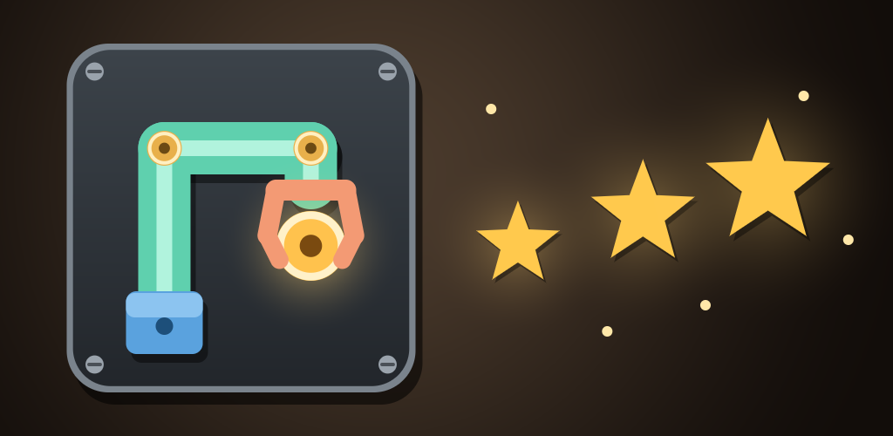

Seja testador do Klanka

O Klanka é um quebra-cabeça de montar braços mecânicos peça a peça. Antes de chegar à Google Play, ele precisa de pelo menos 12 pessoas testando por 14 dias. São 3 passos, todos com a mesma conta Google que vocês usam na Play Store do celular:
1
Entre no grupo de testes
Abra o grupo, toque em "Fazer login" (se pedir) com a sua conta Google e depois em "Participar do grupo". Não chegam e-mails do grupo, é só a inscrição.
Abrir o grupo2
3
Instale e fique com ele 14 dias
Instale pela Play e deixe o jogo no celular por 14 dias. Jogar de vez em quando ajuda muito.
Instalar pela PlayPerguntas rápidas
- Custa alguma coisa? Não. O jogo é grátis; as compras dentro dele são opcionais.
- A Play diz que o app não está disponível. Confira se a Play Store está na mesma conta do passo 1 e espere alguns minutos depois de entrar no grupo.
- Achei um defeito ou tenho uma ideia. Mande para tescarium.grupo@gmail.com ou por mensagem no Instagram @tescarium.
- Quais dados o jogo usa? Veja a política de privacidade.